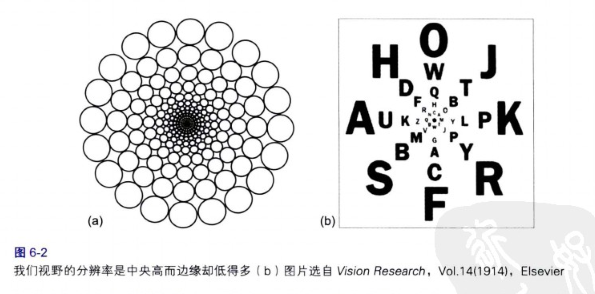

中央凹的分辨率与边界视野的分辨率比较
人类视野的空间分辨率从中央向边缘锐减。中央凹（视野中央区域）仅占视网膜面积的1%，大脑视觉皮层有50%的区域用于接受中央凹的输入。
 我们的边缘视觉分辨率差，但我们看到的世界不是一个“隧道”，是因为眼睛大约以每秒三次的速度快速移动，选择性地将焦点投射在周围的物体上。大脑则用粗旷的、印象派的方式，基于我们所各大和所期待的，填充视野的其他部分。大脑无需为我们四周的环境保持一个高分辨率的心理模型，因为它能够命令眼睛在需要的时候去采样和重新采样具体细节。
边界视觉有什么用
边界视觉的存在主要是为了提供低分辨率的线索，以引导眼球运动，使中央凹能够看到视野里所有有趣和重要的东西。我们的视野周边的模糊线索提供了信息，帮助大脑计划往哪里以及用什么顺序移动眼睛。
如果我们没有理由期待视野边缘有什么有趣的东西，而且那里也的确没有吸引我们注意的东西，情况会怎样？我们的中央凹不会看到那里，因此我们永远也看不到那里有什么。
电脑用户界面中的例子
我们边缘视觉的低敏感度解释了为什么软件和网站用户无法注意到某些出错信息。屏幕上任何不在点击位置1~2cm距离内的东西（假设电脑的观看距离正常）都处于分辨率很低的边界视觉内。
让信息可见的常用方法
- 放在用户所看的位置上
- 标记出错误 用某种方式显著地标记出错误并清晰指明出错了。
- 使用错误符号辅助提示信息
- 保留红色以呈现错误（信息）
让用户注意到信息的重武器：请小心使用
弹出式对话框中的信息 如果这是个紧急情况的错误信息，这样做是正确的；如果仅仅用于类似确诊用户请求操作的执行情况等不重要的信息，这会让人觉得厌烦。网页用户还有人会设置阻止所有弹出窗口。
使用声音（蜂鸣声） 在多数复杂的环境下声音是令人厌烦的，而且人们无法区分声音是自己的还是别人的电脑发出的。有些人还会把自己电脑的音量关得很低。 因此，通过声音来提示错误和其他情况只能在非常特殊和受控的条件下采用。
闪烁或者短暂的晃动 必须谨慎使用，大部分有经验的电脑使用者厌恶屏幕上晃动、闪烁的东西。
如果使用运动或闪烁，必须简短：它应只能延续四分之一到二分之一秒，不能再长，否则它很快就会从无意识的提醒变成有意识的打扰了。